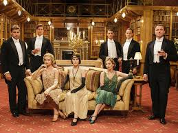

Dohyun Kwak
Philosophy major has been working in manufacturing industry as a non-engineer, but wishes to join new smartfactoring trend with this program.
See for yourselfMy Favorite TV shows
Boston LegalBoston Legal is an American legal comedy-drama television series created by David E. Kelley and produced in association with 20th Century Fox Television for ABC. The series aired from October 3, 2004 to December 8, 2008. The series stars James Spader, William Shatner and Candice Bergen. |
|
|  |
Downton AbbeyThis historical drama follows the lives of the Crawley family and their servants in the family's Edwardian country house. The programme begins with the 1912 sinking of the Titanic, which leaves Downton Abbey's future in jeopardy, as Lord Grantham's presumptive heir -- his cousin James -- and his son, Patrick, die aboard the ship, leaving him without a male offspring to take over the throne upon his death. As a result, Lord Grantham must search for a new heir. As the programme progresses through the decade, other historical events happen leading up to Lord Grantham declaring in 1914 that Britain is at war with Germany, marking the beginning of World War I, which becomes a major plot on the programme. |
SkinsThe lives of a group of teenagers in Bristol, England, are followed through two years of sixth form, with the story line of this critically acclaimed series delving into such controversial subjects as substance abuse, sexuality, teenage pregnancy, personality and eating disorders, and mental illness. `Skins' is unique in its casting of amateur actors, and the fact that the cast is replaced every two seasons, when the characters leave school. |